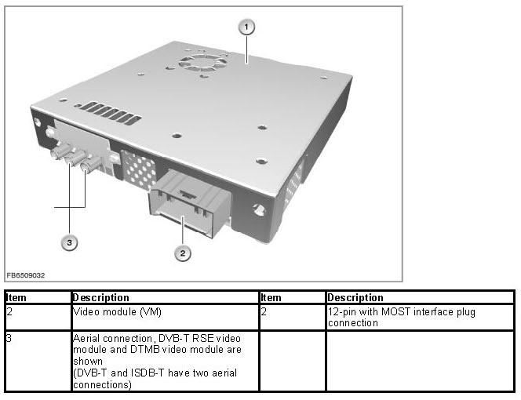
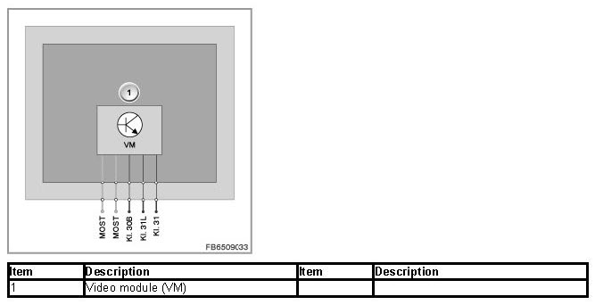

Video Module
Video Module
Video module
The video module (VM) consists of a TV receiver with a teletext function and aerial diversity.
The video modules receive both analogue television and digital television according to the international DVB-T standard (DVB-T: Digital Video Broadcasting - Terrestrial).
Depending on the vehicle equipment and the national-market version, the following video modules are installed:
- DVB-T video module
For TV mode while stationary
- DVB-T RSE video module
For TV mode while stationary and while driving
- ISDB-T video module (Japanese version only)
For TV mode while stationary and while driving
- DTMB video module (Chinese version only)
For TV mode while stationary and while driving
All equipment specifications support the MPEG-2 video format (Motion Picture Experts Group).
Functional description
The TV function is realized in the video module (VM). The TV picture is displayed on the Central Information Display (CID) and, depending on the vehicle equipment, on the rear monitor.
DVB-T and DVB-T RSE video modules:
Each video module has one analogue and one digital TV tuner integrated within it. The changeover between digital and analogue television takes place automatically, but can be switched off manually. The changeover from a digital to an analogue signal is indicated by the greater noise level of the analogue TV picture.
The TV tuner is installed in the video module. In the TV tuner, the video signal and the low-frequency audio signal are generated from the high-frequency aerial signal. The video module also contains a digital image processor that keeps the image stable even in reception areas with a weak signal and can eliminate image interference through filtering.
The sound signal is decoded in the video module and applied to the MOST as a digitized signal.
The video modules do not switch between the individual TV aerials but use all TV aerials simultaneously. For this purpose, the aerial signals are superimposed in the video modules. This results in a considerably improved TV reception, even in analogue television.
As the base model, the DVB-T video module has two aerial inputs. The DVB-T RSE video module has three aerial inputs.
ISDB-T video module (Japanese version only)
The ISDB-T video module (Terrestrial Integrated Services Digital Broadcasting) is designed exclusively for digital television, since digital television is the standard in Japan.
A decoding card is required for the ISDB-T video module. It is installed by the authorized BMW dealer when the video module is purchased. The insertion slot for the decoding card is located in the video module opposite the electrical connections. It is used for registration with the operator. The ISDB-T video module is designed for TV mode while stationary and while driving. Unlike the DVB-T RSE, it does not require a third TV aerial and therefore has only two aerial inputs.
DTMB video module (Chinese version only)
The DTMB video module (Digital Terrestrial Multimedia Broadcast) has one analogue and one digital TV tuner integrated within it (analogue to the DVB-T). The DTMB video module is designed for TV mode while stationary and while driving. In vehicles with a rear seat entertainment system, all three aerials are connected; otherwise, the third aerial input remains open.

Structure and inner circuit
The video module (VM) is connected to the vehicle electrical system and the MOST via a 12-pin plug connection with a MOST interface.
The picture signals are transmitted from the video module via the CVBS lines to the connected devices (e.g. video switch).
The video module is supplied by the rear power distribution box via terminal 30B.

Pin assignments
The diagram above shows only the supply and bus connection. The current pin assignment can be found on the BMW ISTA (Integrated Service Technical Application) diagnosis system among the wiring diagrams. Click on the component code in the wiring diagram to activate the "Installation location" and "Pin assignment" tabs.
Nominal values
Observe the following nominal values for the video module (VM):
Variable Value
Power supply 9 to 16 V
Temperature range -40 to 85 °C
Diagnosis instructions
Failure of the component
If the communication to the video switch fails, run the standard checks (global testing procedure). If there is an internal control unit fault, the following behavior is to be expected:
- Fault entry in the video module (VM)
No liability can be accepted for printing or other errors. Subject to changes of a technical nature